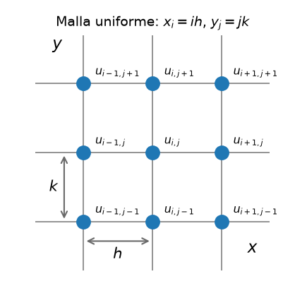

Hasta aquí las incógnitas dependían de una sola variable (\(y(x)\)). Cuando la incógnita depende de dos o más variables — posición y tiempo, o varias coordenadas espaciales — las derivadas son parciales y hablamos de ecuaciones en derivadas parciales (EDP).
La EDP lineal de segundo orden más general en dos variables es
\[A\,u_{xx} + B\,u_{xy} + C\,u_{yy} + P\,u_x + Q\,u_y + F\,u = G\]
Su tipo lo decide el discriminante \(B^2 - 4AC\), igual que la ecuación cuadrática:
| Discriminante | Tipo | EDP canónica | Ejemplo físico | Datos necesarios |
|---|---|---|---|---|
| \(B^2 - 4AC < 0\) | Elíptica | Laplace: \(u_{xx} + u_{yy} = 0\) | Temperatura de equilibrio en una placa, potencial eléctrico | Condiciones de contorno en todo el borde |
| \(B^2 - 4AC = 0\) | Parabólica | Difusión: \(u_t = D\,u_{xx}\) | Calor difundiéndose en una barra, difusión de contaminante | Condición inicial + contorno en \(x\) |
| \(B^2 - 4AC > 0\) | Hiperbólica | Ondas: \(u_{tt} = c^2 u_{xx}\) | Cuerda vibrante, propagación de ondas | Dos condiciones iniciales (\(u\) y \(u_t\)) + contorno |
Comprobación: para Laplace, \(A = C = 1\), \(B = 0\) → \(-4 < 0\); para difusión (\(A = 1\) en \(x\), \(C = 0\) en \(t\)) → \(0\); para ondas (\(A = 1\), \(C = -c^2\)) → \(4c^2 > 0\).
La clasificación no es solo taxonomía, determina la estrategia numérica.
En los capítulos siguientes la idea es siempre la misma, el continuo se reemplaza por una malla de puntos y la EDP por una ecuación algebraica en cada nodo.

Mirando adelante. En un esquema explícito típico para ondas, la condición CFL \(c\,k/h\le1\) exige que una onda no recorra más de una celda espacial durante un paso temporal. No desarrollaremos aquí las EDP hiperbólicas.